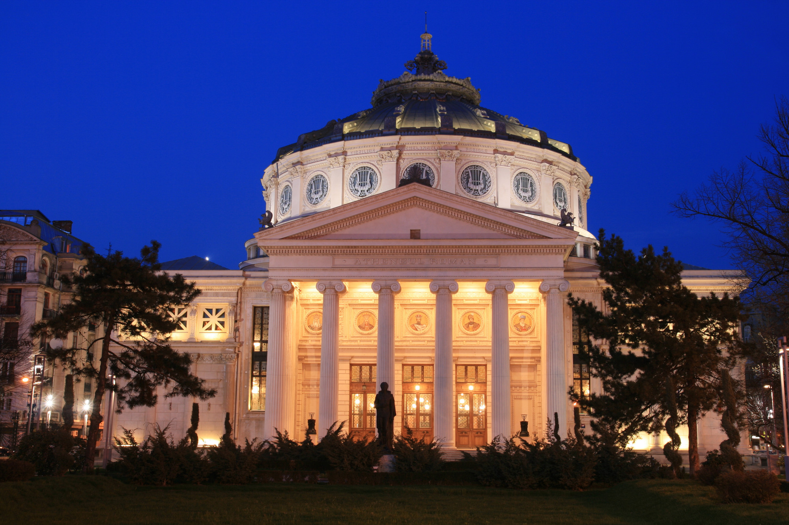
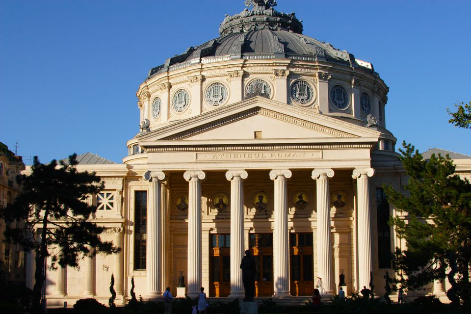
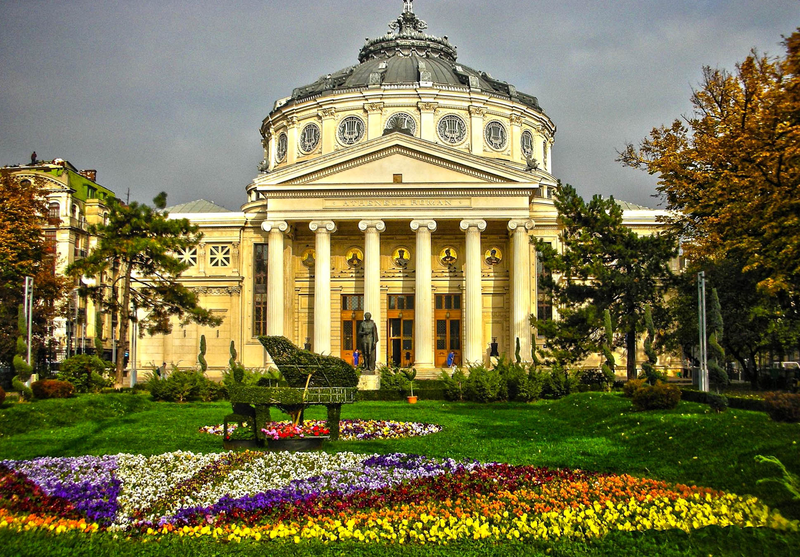
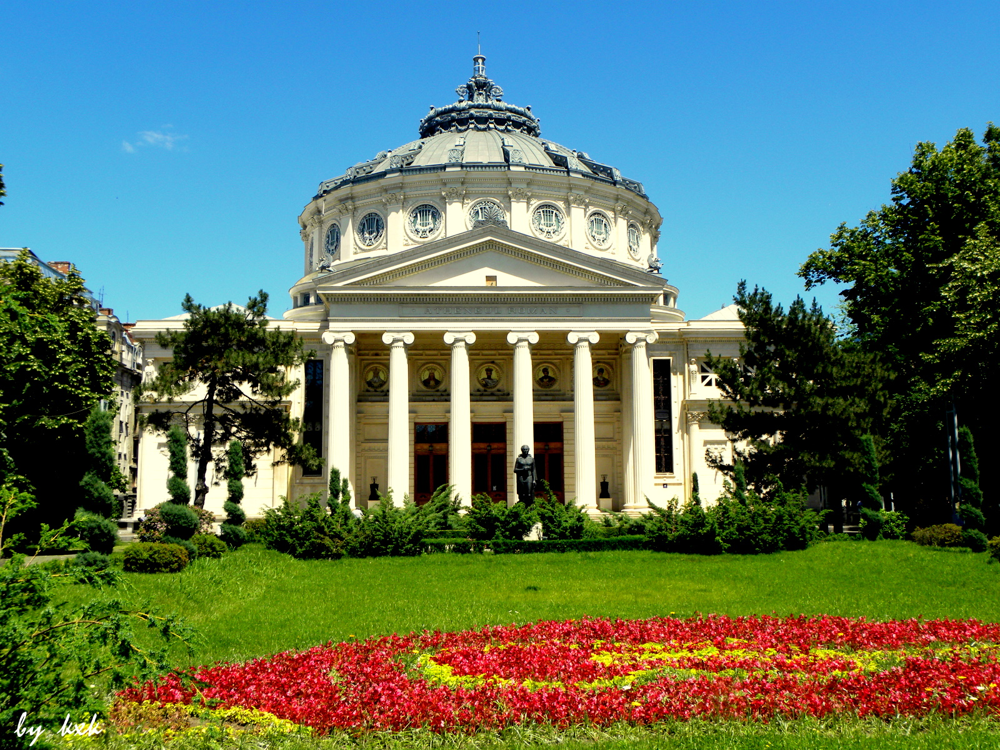

Romanian Athenaeum
The Romanian Athenaeum (Romanian: Ateneul Român) is a concert hall in the center of Bucharest, Romania and a landmark of the Romanian capital city. Opened in 1888, the ornate, domed, circular building is the city's main concert hall and home of the "George Enescu" Philharmonic and of the George Enescu annual international music festival.

History
In 1865, cultural and scientific personalities such as Constantin Esarcu, V. A. Urechia, and Nicolae Creţulescu founded the Romanian Atheneum Cultural Society. To serve its purposes, the Romanian Athenaeum, a building dedicated to art and science, would be erected in Bucharest.
The building was designed by the French architect Albert Galleron, built on a property that had belonged to the Văcărescu family and inaugurated in 1888, although work continued until 1897. A portion of the construction funds was raised by public subscription in a 28-year-long effort, of which the slogan is still remembered today: "Donate one leu for the Ateneu!"
On December 29, 1919, the Atheneum was the site of the conference of leading Romanians who voted to ratify the unification of Bessarabia, Transylvania, and Bukovina with the Romanian Old Kingdom to constitute Greater Romania.
Extensive reconstruction and restoration work has been conducted in 1992 by a Romanian construction company and restoration painter Silviu Petrescu, saving the building from collapse. The 9 million Euro required were contributed in equal shares by the government and the Council of Europe Development Bank.
Building and facilities
The overall style is neoclassical, with some more romantic touches. In front of the building there is a small park and a statue of Romanian poet Mihai Eminescu.
Inside, the ground floor hosts an ornate conference hall as large as the auditorium above; the auditorium seats 600 in the stalls and another 52 in loge seating.
A 75-sqm long and 3-m wide fresco by Costin Petrescu decorates the inside of the circular wall of the concert hall. Painted using the al fresco technique, the piece depicts the most important moments of Romanian history, starting with the conquest of Dacia by Roman emperor Trajan and ending with the realization of Greater Romania in 1918.
Recognized as a symbol of Romanian culture, the building has been inscribed in 2007 on the list of the Label of European Heritage sites.

Travel informations
Considered one of the architectonical Hotels in Bucharestjewelry of Romania, the building of the Romanian Athenaeum from Bucharest is the “Cultural Society Romanian Athenaeum’s result, founded in 1865 by an enthusiastic group formed of Constantin Esarcu, V. A. Ureche, C. Rosetti, N. Kretulescu, Al. Odobescu and others.
The first amount of money were raised after 20 years, under the slogan “Dati un leu pentru Ateneu” (Give one leu for the Athenaeum), this way in 1886 the attempts for renovations became facts.
The architect Albert Galleron conceived the plans, in neo-classical style, and in 2 years the building was almost done, being inaugurated on 14 February 1888. Practically, the construction hardly ended in the 30’s of the XX century.
From the outside, the Romanian Athenaeum is formed from a peristyle of six columns in Ionic style, giving the impression of a Greek temple, under which there are, in medallions, the faces of five voivodes of Romania: Neagoe Basarab, Alexandru cel Bun, Vasile Lupu, Matei Basarab and King Carol I. A team of architects gave the dome’s initial former and engineers after Galleron handed the project.
The inside is maybe more impressive then the outside. In the entrance hall there are four winding stairs surrounding some marble columnsof Carrara and decorative sculptures. The auditorium (28,50 meters in diameter and 16 meters high) having a special acoustics, seats 600 in the stalls and another 52 in loge seating. However, what really moves you in a special way is the 70 meters long fresco and high of 3 meters, realized round about. During 5 years (1933-1938), the painter Costin Petrescu worked to transpose in images 25 scenes from the Romanian history “The entrance of King Traian in Dacia”, “The colonization with the Roman legionary”, “The formation of the Daco-Roman people”, “The Roman Sentinel”, “The Barbarian’s Invasion”,” The Roman Nation’s Beginning”, “The Settlement”, “The Foundation”, “The Military State”, “The Military State with the ruler’s division”, ”The Crusade”, “The Stephen the Great Voivode”, “The Age Of Peace And Faith”,” Michael the Brave – The Unification of the Three Principalities”, “The Romanian Culture’s beginnings”, “The Three Heroes Of The Peasant Revolt – Horea, Closca and Crisan”, “The Revolution from 1821 Of Tudor Vladimirescu”, “1848 In Transylvania”, “1848 In The Principalities”, “The Union Of The Principalities from 1859”, “The Independence War Led By Carol The 1st”, “The War for the Nation’s Completion 1916-1918″, ” Ferdinand The 1st – The completing” and “The Foundation Age”.


During the World War 2, the building of Romanian Athenaeum remained undestroyed by some miracle during the bombardments which ruined the surrounded the buildings around it. Over a century The Athenaeum is the Romanian culture’s sanctuary which harbored impressive concerts of the world’s most important conductors and soloists. First, we must remember the fact that on 1st March 1988 rung out for the first time the chords of the famous symphony suite Romanian Poem. At the orchestra’s music stand was actually the composer Geroge Enescu at that time being 17 old. Among the greatest names that evolve on Athenaeum’s stage are: Sergiu Celibidache, Ionel Perlea, Herbert von Karajan, Dinu Lipatti, Arthur Rubinstein, Pablo Casals, Erich Kleiber, David Oistrah, Igor Strawinsky, Richard Strauss, Paul Robeson. Since 1953, at the residence of the Athenaeum, the State Philharmonic “George Enescu” is performing.